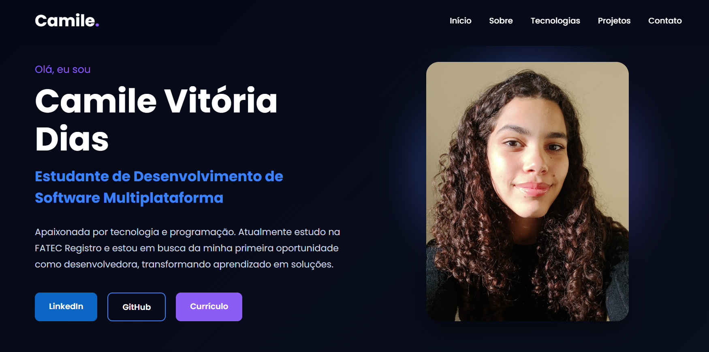

Olá, eu sou
Apaixonada por tecnologia e programação. Atualmente estudo na FATEC Registro e estou em busca da minha primeira oportunidade como desenvolvedora, transformando aprendizado em soluções.
Atualmente, estou iniciando o 3º semestre do curso de Desenvolvimento de Software Multiplataforma na FATEC Registro. Tenho formação técnica em Administração e estou construindo minha carreira na área de tecnologia, com foco no desenvolvimento de software e na análise de dados.
Ao longo da minha trajetória acadêmica e profissional, desenvolvi habilidades como organização, comunicação, trabalho em equipe e resolução de problemas, competências que contribuem para meu crescimento e preparação para os desafios da área de tecnologia.
Meu objetivo é conquistar uma oportunidade de estágio para colocar esses conhecimentos em prática, continuar aprendendo e evoluir como desenvolvedora.
- Técnico em Administração
ETEC Registro (concluído em 2024)
- Desenvolvimento de Software Multiplataforma
FATEC Registro (conclusão prevista em 2028)
- Desenvolvimento Back-end
- Desenvolvimento Front-end
- Análise de Dados
Tecnologias que utilizo e estudo durante minha formação, aplicando esses conhecimentos no desenvolvimento de projetos práticos para fortalecer minhas habilidades em desenvolvimento de software.
Desenvolvimento de páginas web
Estilização e layouts responsivos
Lógica e interatividade
Desenvolvimento backend
Banco de dados e SQL
Controle de versão
Hospedagem de projetos
Programação e dados
Projetos desenvolvidos para aplicar meus conhecimentos em desenvolvimento web, banco de dados e programação, demonstrando minha evolução prática na área de tecnologia.

Portfólio responsivo desenvolvido para apresentar minha trajetória, habilidades técnicas, projetos e formas de contato de maneira moderna e organizada.
🟢 Finalizado
Sistema para gerenciamento de receitas e despesas, permitindo acompanhar entradas, saídas e saldo de forma simples e intuitiva.
⚪ Em desenvolvimento
Estou aberta a novas oportunidades, conexões profissionais e projetos na área de tecnologia.
camilemvdias@gmail.com
linkedin.com/in/camile-vitória-dias-b5a41537a
github.com/camilemvdias-source
(13) 99720-9794